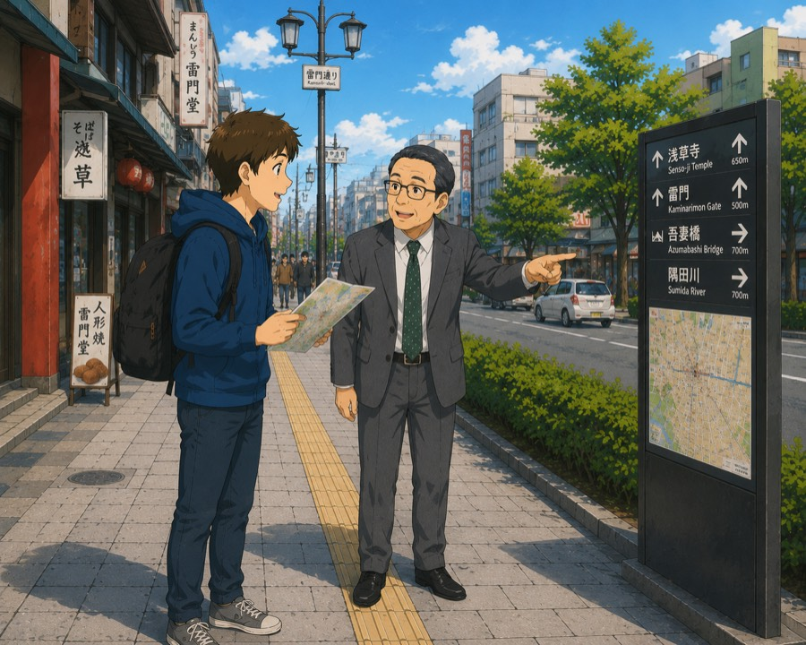
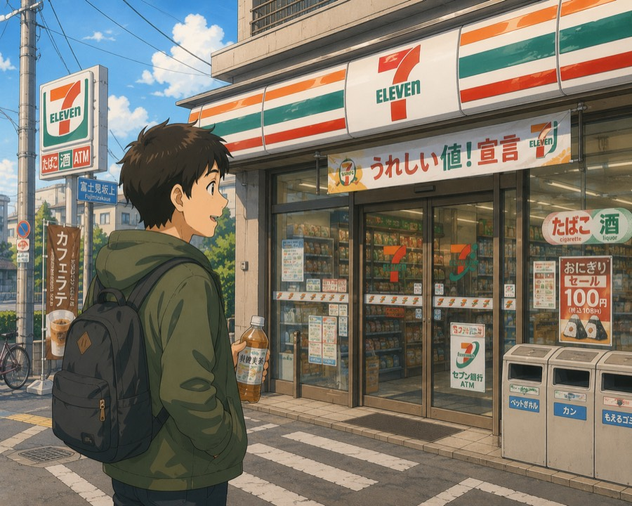
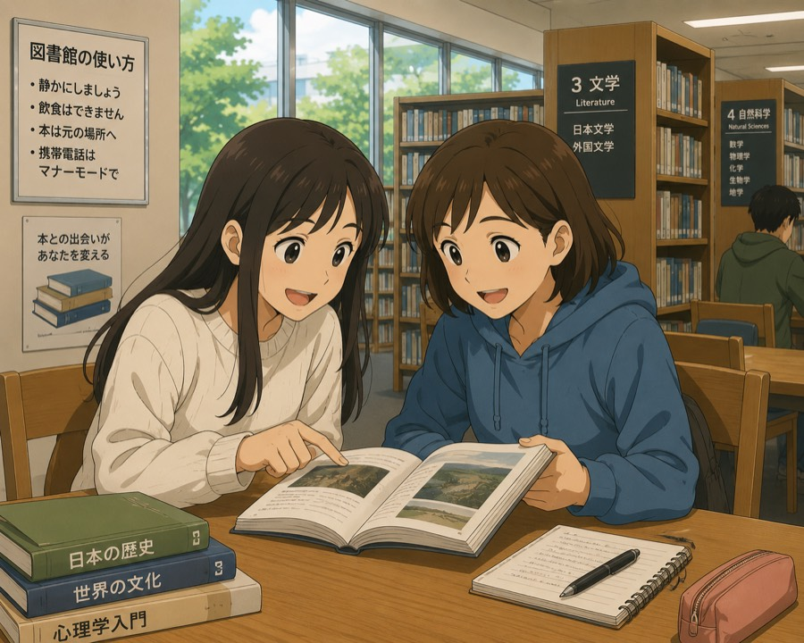
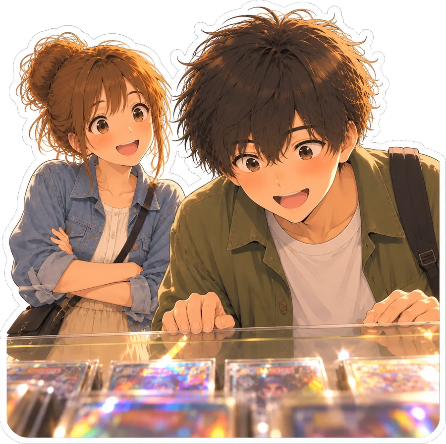

In this sentence
Still at the office
Coming to iPhone
Everyday conversations at full speed, with every squashed sound and dropped syllable explained in the line it’s in.
Still at the office
One line, heard twice.
At full speed, before any text shows up.
Tap a word, or drag across a few, and see what each piece is doing in this sentence.
This time, you catch all of it.
When you’re ready, step into the other person’s line and say it yourself.
Counted only from conversations you can play today.
170+Conversations
2,500+Spoken lines
2 hrs+Of dialogue audio
105Grammar patterns
The line happens at a window, a sidewalk, a storefront, a table.
A traveler and the attendant at the ticket window. Each talk builds on the last.

Stop someone on the street and get pointed the right way.

A quick exchange out front, before you head in.

Two people, one open book.

170+ conversations, N5 to N3.